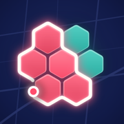

TurflinePrivacy Policy
Turfline is a walking game for iPhone: the hexagons you walk through on the map become yours, and other players can take them. This page explains exactly what data the game uses, where it goes and how to delete it.
No account, no real name
You never give us an email address, phone number, password or name. On first launch the app creates an anonymous player: a random player ID, a secret key that stays in your iPhone's Keychain, a randomly generated nickname (for example "Brave Otter") and a colour. There is no text you can type that other players see.
Location
Turfline uses your iPhone's precise location only while you are on a walk that you started yourself. The blue location indicator is shown the whole time.
- Conquest mode: your GPS points are sent to the Turfline server so it can work out which hexagons you walked through and whether you closed a loop. The raw points are kept only while the walk is open and are deleted when the walk ends, or after 12 hours without activity. What stays on the server is which hexagons you own (each about 50 m across), their strength and the day they were last visited.
- Solo mode and Trails mode: nothing is sent anywhere. Your private board and every trail line stay on your iPhone.
- Privacy zone: you can draw a circle around your home in Settings. Points inside it are never sent and never claim hexagons.
What other players can see
Other players see which hexagons belong to your nickname and colour, how strong they are, your level and your place on the leaderboards. They never see your location, your routes or when you walked. Changes you make appear on other players' maps only after a delay of at least 15 minutes, so nobody can follow you live. When someone takes your hexagons, your inbox shows their nickname and an approximate time (rounded to the hour, shown as "earlier today"), never an exact time.
Data on the server
| Data | Why | Kept |
|---|---|---|
| Player ID, nickname, colour, level, XP, hexagon counts | Run the game and the leaderboards | Until you delete your account |
| Hexagons you own (cell ID, strength, last-visit day) | The shared map | Until someone takes them or you delete your account |
| Raw GPS points of an open walk | Detect hexagons and loops | Until the walk ends (at most 12 hours idle) |
| Inbox events (who took how many of whose hexagons, time rounded to the hour) | Your attack inbox | 30 days |
| A one-way hash of the secret key and of your IP address | Sign-in and abuse/rate limits | Key hash until deletion; IP hashes for minutes |
The server runs on Cloudflare (Workers and D1). Request logging is turned off. We do not use analytics, advertising, tracking, data brokers or AI services, and we do not sell or share data with anyone. The data is not used to track you across apps or websites.
Data on your iPhone
Your settings, your walks and trail lines, your Solo board and pending uploads are saved in the app's storage on your iPhone. Trails leave the phone only if you export them yourself (GPX/KML) with the share sheet.
Notifications
If you allow notifications, the app checks your inbox in the background now and then and shows a local notification when someone takes your hexagons. No push service or device token is used.
Deleting your data
Settings > Delete account and all data removes your player, all your hexagons, walks and inbox events from the server immediately, and clears your trails, Solo board and settings on the phone. Deleting the app removes the data on the phone; to also remove the server data, use Delete account first, or email us your nickname.
Children
Turfline is not directed at children under 13 and does not knowingly collect personal information from them. Because players are anonymous and cannot write messages, no contact between players is possible.
Changes and contact
If this policy changes, the date above will be updated. Questions or deletion requests: onurus96@gmail.com.